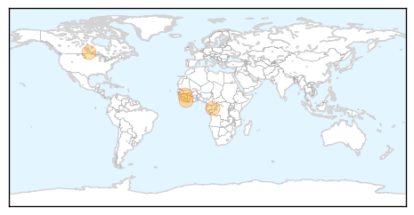
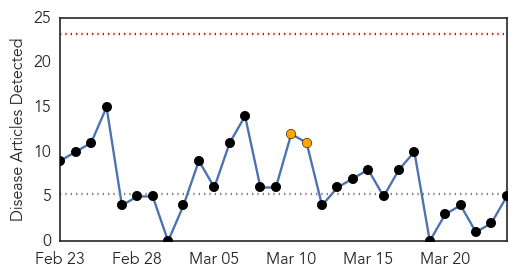
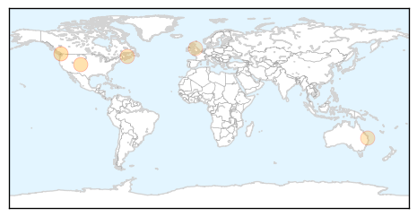
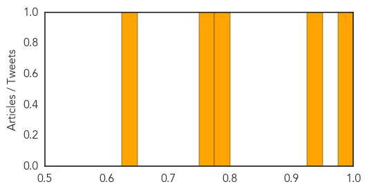

Hemmorhagic Fever
30-Day Web Trend
1 alerts, 0 warnings

30-Day Twitter Trend
1 alerts, 0 warnings

Article Locations
Article Confidences

Top Articles:
- 1.000
- Seriously ill Saskatchewan man prompts Ebola scare
- 1.000
- Man falls ill after visit to western Africa; placed in hospital isolation
- 0.998
- Saskatoon man tested for viral hemorrhagic fever after trip to Liberia
- 0.998
- Ebola ruled out in case of Saskatoon patient
- 0.956
- 'Serious illness' reported after Saskatoon man returns from Africa
- 0.920
- Man falls ill after visit to western Africa; placed in hospital isolation
Top Tweets:
-
No tweets found for Mar 24, 2014
Measles
30-Day Web Trend
0 alerts, 2 warnings

30-Day Twitter Trend
0 alerts, 0 warnings

Article Locations
Article Confidences
Top Articles:
- 0.976
- Measles outbreak mostly contained at 228 cases: Fraser Health
- 0.946
- B.C. vaccination rates drop amid 'misinformation' campaign
- 0.784
- P.E.I. measles infant vaccination 11% below national average
- 0.755
- Anti immunisation group ordered to change name
- 0.641
- Immunizations must be convenient to stop disease, says doctor
Top Tweets:
-
No tweets found for Mar 24, 2014